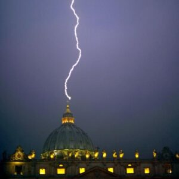

Lightning Conductor Testing
Testing of lightning conductors and earth electrodes, so your building stays protected from lightning strikes.
Why it matters
Lightning can cause serious damage to masonry, wood, concrete and steel. The heat from a strike can start fires, weaken structures and, in extreme cases, turn moisture into superheated steam with explosive force. A lightning conductor only protects a building if it stays in good condition, so regular testing is essential.
About lightning conductors
Lightning conductors, also known as lightning rods or finials, are strips or rods of conductive material, usually copper. They are mainly used on tall or isolated structures to safely carry a strike to the ground.
What our testing covers



Conductor testing
Resistance readings that identify any points of failure along the conductor.
Earth electrode testing
Testing of the earth electrodes that the conductor relies on to dissipate a strike safely.
Condition report
A detailed report on the condition of the conductor, including readings and any identified failure points.
Why choose us
- Testing carried out by experienced, trained professionals
- Clear reporting you can use for maintenance planning
- Continued protection for your building through regular maintenance
Standards
Our work follows the BS EN 62305 series for protection against lightning.